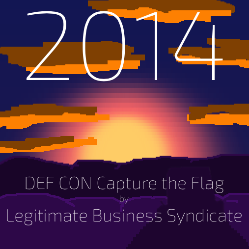

A Noob's attempt at the 2014 DEF CON CTF Qualifiers

By a happy coincidence, the DEF CON Capture the Flag Qualifiers were 2 weekends ago, the same weekend I was cooped up and doped up after my wisdom teeth removal. Figuring that I had nothing to loose by at least checking out the challenges. I signed myself up as team TTT
What went down
I managed to score myself 2 whole points! That’s almost 40 points behind the winner, but they had like way more people and I figure 2 points isn’t too shabby given that I was a single person, on codeine with about zero relevant experience.
Routarded
The challenge consisted of a url that led to an unsecured router. Step 1 was to guess the default password. I tried admin / admin, admin / password and admin / (nothing) without any luck. This led me to http://www.routerpasswords.com/ which contains the default passwords for most routers. I figured I would work my way through the list. Thankfully I got lucky, the first new combo I treid was (blank) / admin. Now to look for the flags…
I poked around a bit, tried changing the password (it reset) and a few other things. I settled on the utitlies tab, which let you ping an ip address / host. It seemed like the output was exactly the output of ping on the command line… I wonder if they sanitize their input? Checking the HTML for the page shows that there’s a js function that’s called on form submission that strips characters. At first, I tried using curl to post data directly, but I couldn’t get the cookie jar working quite right. Instead, I just replaced the sanitization function with an identity function and tried submitting ‘; ls’ and voila! I got a directory listing! Oh hey, there’s a file called flag. Next up submitting ‘; cat ./flag’ and I had my first flag!
Hackertool
This next one asked you to submit the MD5 for a file and contained a link to a torrent. The file in the torrent was called EVERY_IP_ADDRESS.txt. My first guess was that I might be able to extract the hash directly from the torrent file, since I’m pretty sure you have to be able to compare the hash of the file you torrent to what it should be. Sadly I didn’t have any luck in this approach, probably due to my incompetence, but also because the spec uses SHA1…
Next thought, why not just generate every ip address myself? I wrote a ruby script, and then a go script to do this since it took nearly 40 minutes.
After the game was over, I realized I didn’t actually have to create the 65GB txt file, I could have just fed the input into a MD5 hash function without finalizing the hash.
3DTTT
This one was fun! I banged my head against it for much too long though and I never got the point for it… You were given an address that you could telnet into a play a game of 3d tic tac toe against an AI. But you had to write a script to do it for you, since if you took too long, the connection closed.
Here’s the source for my bot… It doesn’t do especially well. Sometimes I’d get lucky and win more than I lost, but generally I’d loose too many and I’d have to start over.
Except once! One time I got lucky and I won a bunch of games in a row, but I didn’t have any code written to deal with a winning state, nor did I output the ordering that led to my miraculous bot wins… I felt like such an idiot
Other challenges
I tried a few other ones, but they were mostly incomprehensible to me. I need to know more about disassembling programs, which apparently means learning how to use a tool called Ida. Also, I should learn WAY more assembler. If you want to read some solutions to the other challenges, check out http://www.routards.org/2014/05/defcon-22-quals-dosfun4u.html